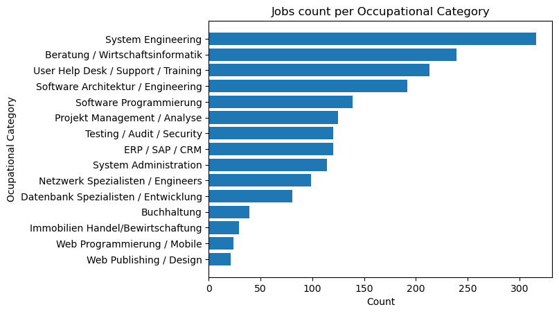
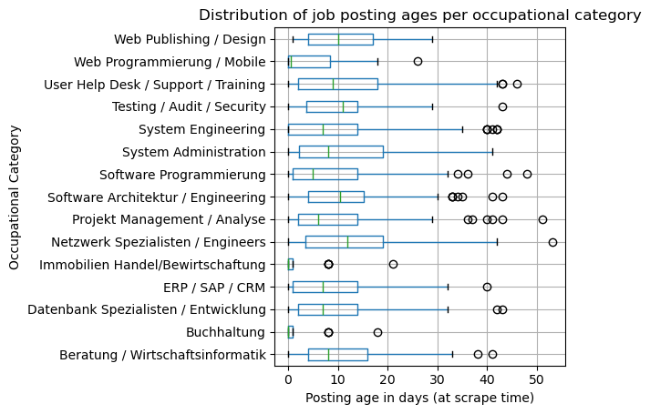
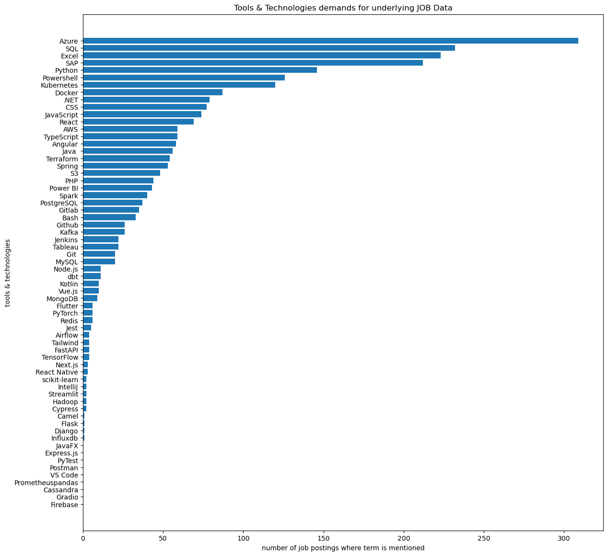
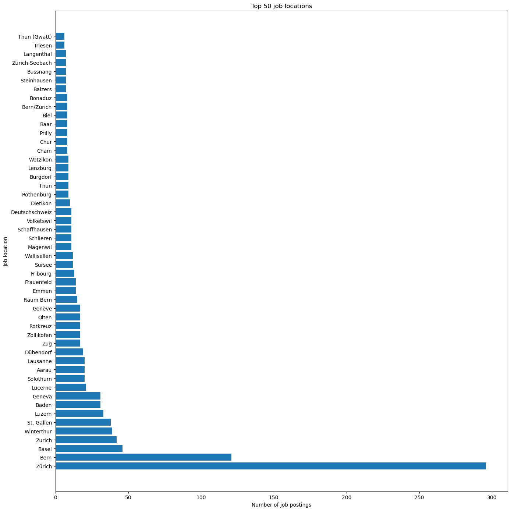

| Question | Main Question | Analysis Method | Visualization | Why this is interesting |
|---|---|---|---|---|
| Question 1 | What are the top 15 most common job occupational categories of the underlying data (more standardized than JOB Titles and therefore easier to measure) | use SQL count(*) aggregation combined with group by | matplotlib bar chart | shows us what jobs of our underlying data are in highest demand |
| Question 2 | How old is the median job posting for each of the 15 most common occupational categories of the underlying data (I will measure this using the date when I scraped the website) | use the median function that is supported in DuckDB | matplotlib box plots for each occupationalCategory | gives us a glimpse into how long jobs are available for each category (older postings → maybe hard to fill role) |
| Question 3 |
In how many job postings is each of the defined terms mentioned of the underlying data terms = [ "Bash", "Powershell", "Java ", "Kotlin", "JavaScript", "PHP", "Python", "SQL", "TypeScript", "Angular", "CSS", "JavaFX", "React", "React Native", "Next.js", "Flutter", "Tailwind", "Vue.js", ".NET", "Express.js", "FastAPI", "Flask", "Django", "Node.js", "Spring", "MongoDB", "MySQL", "PostgreSQL", "Redis", "Airflow", "Camel", "dbt", "Hadoop", "Kafka", "Spark", "Influxdb", "Cassandra", "Prometheus" "pandas", "PyTorch", "scikit-learn", "TensorFlow", "Docker", "Git ", "Github", "Gitlab", "Jenkins", "Kubernetes", "Terraform", "Cypress", "Jest", "PyTest", "Postman", "VS Code", "IntelliJ", "Excel", "SAP", "Power BI", "Tableau", "Gradio", "Streamlit", "AWS", "S3", "Azure", "Firebase" ] ] |
filtering and text-search | bar chart | This is a good use-case for valuable text-analysis! If I'm looking for a job in Software Engineering or Data Engineering I might be interested in what tools & technologies are in demand by employers. This result might also be interesting for the BFH or other educational institutions to validate if they teach things that are in demand 😉 |
| Question 4 (Bonus) | How are the jobs distributed across Switzerland (Job Location) of the underlying data (top 50 most mentioned Job Locations) | use SQL count(*) aggregation combined with group by | sShow a barchart | It is valuable to know in what regions have high demand for jobs. |
In this task we wanted to analyze our structured data. An important question to consider is: What are we analyzing and measuring?
Question: What are the top 15 most common job occupational categories of the underlying data?
Findings:

Validity:
Since we only consider the underlying data, the validity is quite high, since the occupational categories field uses standardized values (jobTitle does not).
We can easily count those categories using COUNT and GROUP BY in SQL.
Question: How old is the median job posting for each of the 15 most common occupational categories of the underlying data?
Findings:

Validity:
Here we want to look at things like: how easy is it to fill this role or how popular is this role.
We must take into account that maybe companies delete old job postings and then repost them again when they did not find somebody.
Or maybe a company does not delete the job posting even though the position is now occupied.
I used the median instead of the mean to mitigate these effects.
Question: In how many job postings is each of the defined terms mentioned in the underlying data?
Findings:

Validity:
Here the validity is moderately high since we just try counting mentions of terms in the job posting descriptions.
We would only not count them if they are not written correctly (which is very unlikely), or maybe we would count “Java” too often because it appears also in “JavaScript” (for this reason I included a whitespace in the "Java" term and also in the "Git" term).
Even if not 100% accurate, this gives us a good idea of how demanded certain technologies & tools are, at least in the underlying data.
Question: How are the jobs distributed across Switzerland (Job Location) in the underlying data?
Findings:

Validity:
In this example the validity is more difficult because the jobLocation attribute is not standardized.
A job posting can have just one location or also many locations (you can choose where you want to work).
However, most job postings still only indicate 1 jobLocation.
We can easily count those location values using COUNT and GROUP BY in SQL.